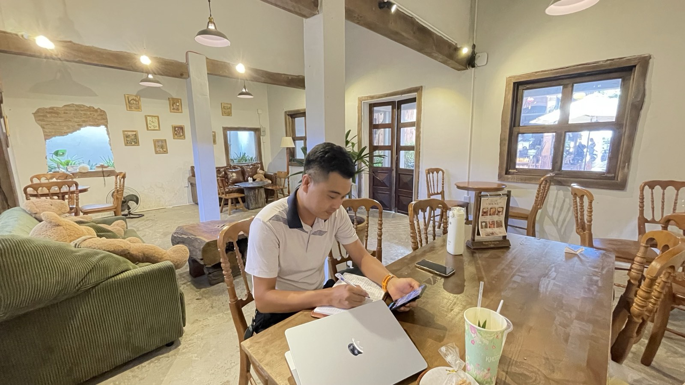

Tôi để khách chờ 3 ngày mới gọi lại — và hai luật tôi đặt cho mình từ hôm đó
Đầu tháng 10, trong một buổi học về bán hàng, cả nhóm làm bài tập xếp khách của mình theo mức độ "nóng". Đến lượt tôi, tôi nói thật: tôi có nhiều khách đang nóng, nhưng vì bận nên nhiều khi nhắn tin muộn, hoặc 3–4 ngày sau mới gọi lại. Lúc gọi thì câu chuyện đã nguội. Tối hôm đó về nhà, tôi bật máy ghi âm và tự nói với mình một câu không dễ nghe chút nào.

Ảnh tư liệu. Thứ tôi cần sửa không nằm ở lời nói với khách, mà ở nhịp làm mỗi ngày.
Câu tôi tự ghi âm tối hôm đó
"Gần như mình đang bỏ bê khách hàng, không quan tâm chăm sóc cụ thể, chu đáo… Đến khi cần lại không gọi được cho ai."
Nói ra được câu đó thì nhẹ người. Nhưng tôi biết mình: tự trách chung chung thì sáng mai lại quên. Một câu tự trách không đo được thì cũng không sửa được. Nên tôi làm việc mà tôi vẫn làm với một lô đất: đặt câu nói đó cạnh dữ liệu thật, xem vế nào đúng, vế nào sai.
Đo lại: một câu tự trách, hai vế, hai kết quả khác nhau
| Vế tôi nói | Dữ liệu ghi lại được | Kết luận |
|---|---|---|
| "Đến khi cần lại không gọi được cho ai" | Những lần tôi thật sự cần và nhấc máy gọi, người ta vẫn bắt máy, vẫn giúp ngay trong ngày. Có tuần còn có ba người tự tìm đến tôi. | Không đúng. Mối quan hệ của tôi vẫn trả lời khi được gọi. |
| "Bỏ bê, không chăm sóc cụ thể, chu đáo" | Một bản phân tích tôi hẹn gửi khách vào một buổi tối, chín ngày sau vẫn chưa gửi. Một việc nhỏ tôi nhận làm từ hai tuần trước, vẫn chưa làm. | Đúng, và có số đo. |
Đọc xong bảng này, tôi thấy câu tự trách ban đầu sai một nửa. Vấn đề của tôi không phải là "không có ai". Vấn đề là nhịp chăm sóc những người đang có: hứa gì, hẹn lúc nào, rồi để trôi.
Và điểm này quan trọng hơn tôi tưởng: lỗ hổng không nằm ở chỗ biết làm. Tôi biết gọi khách, biết nói chuyện với khách. Lỗ hổng nằm ở tốc độ. Mà tốc độ là chuyện tổ chức công việc, không phải chuyện học thêm kỹ năng nói hay cố gắng hơn bằng ý chí.
Vì sao 3 ngày lại đắt như vậy
Khách đang hỏi thật về một căn nhà hay một lô đất thì không chỉ hỏi mình tôi. Trong 3 ngày tôi im lặng, họ đã nói chuyện với người khác, đã đi xem chỗ khác, hoặc đơn giản là cảm giác muốn mua đã qua. Khi tôi gọi lại, tôi không còn nói chuyện với một người đang nóng nữa. Tôi đang nói chuyện với một người phải được hâm nóng lại từ đầu.
Có một điều làm tôi vừa buồn vừa buồn cười: sáng hôm đó tôi còn tự nhận việc tôi hay né nhất chính là gọi điện cho khách. Vài giờ sau, tôi bấm máy gọi một khách và nói chuyện hơn mười phút. Không có gì khó cả. Cái khó chỉ là bấm nút gọi.
Luật thứ nhất: khách đang hỏi thật thì gọi lại trong 24 giờ
Không phải "khi rảnh", không phải "cuối tuần gom lại gọi". Trong 24 giờ. Ngày nào kín lịch thì có ba cách tôi đang thử:
- Nhắn một câu giữ chỗ ngay: "Anh/chị chờ em đến tối, em gọi lại nói kỹ." Một câu mười giây, nhưng khách biết mình được nhớ.
- Đặt lịch gọi lại vào lịch làm việc, có giờ cụ thể, như một cuộc hẹn thật. Việc gì không có giờ thì sẽ trôi.
- Nhờ người cùng làm đỡ những hôm thật sự không xoay được, thay vì để khách chờ trong im lặng.
Luật thứ hai: không đi gặp khách khi chưa chuẩn bị đủ
Gọi nhanh mà nói không có gì mới thì cũng phí cuộc gọi. Nên ngày 14/10 tôi đặt thêm một luật cứng cho mình: trước khi đi tư vấn bất kỳ sản phẩm nào, tôi phải có một bộ hồ sơ chuẩn bị gồm hai phần:
- 20 điều tôi biết mà khách chưa biết, chia theo các nhóm: pháp lý, chủ nhà hoặc chủ đầu tư, hạ tầng, tiện ích, giá và chính sách, dòng tiền, chi tiết sản phẩm… Mỗi điều phải có nguồn và ngày. "Gần biển" thì ai cũng biết, không tính. "Đi bộ 7 phút ra biển, tôi đã đi thử" thì mới tính.
- 5 ý kiến của người đã mua, hỏi bằng ba câu: lúc đầu anh chị lo điều gì, điều gì khiến anh chị quyết mua, và anh chị khuyên gì cho người đang phân vân. Chưa đủ 5 thì ghi rõ đang có mấy, không bịa cho đủ.
Và một vạch đỏ: phần pháp lý còn trống thì tôi chỉ gặp khách để nghe nhu cầu, chưa chào sản phẩm đó. Tiền của khách chỉ an toàn khi giấy tờ rõ ràng, nên tôi không cho phép mình nói chắc ở chỗ mình chưa biết.
Hai luật này đi với nhau. Luật thứ nhất giúp tôi không để khách nguội. Luật thứ hai giúp cuộc gọi đó có giá trị, để khách nghe máy vì có điều đáng nghe, không phải vì tôi gọi nhiều.
Trạng thái: đang thử, chưa có kết quả
Tôi viết bài này không phải để kể là mình đã sửa xong. Chưa. Hai luật trên mới chạy được ít ngày, và tôi chưa có số liệu đủ dài để nói nó hiệu quả đến đâu. Việc tôi định làm là đo lại sau một tháng: bao nhiêu khách được gọi lại trong 24 giờ, bao nhiêu lời hẹn được giữ đúng ngày. Có kết quả, tốt hay chưa tốt, tôi sẽ viết tiếp.
Còn nếu anh chị cũng đang làm nghề phải giữ liên lạc với nhiều người, tôi chỉ gợi một việc: lần tới tự trách mình điều gì, hãy thử tách câu đó làm hai vế và tìm dữ liệu cho từng vế. Rất có thể một nửa câu đó sai, và nửa còn lại chỉ ra đúng chỗ cần sửa.
Bài viết là trải nghiệm cá nhân của tôi trong nghề môi giới, không phải phương pháp chung cho mọi người. Các luật nêu trong bài đang ở giai đoạn thử, chưa được kiểm chứng bằng số liệu dài hạn.
"Rồi, ngày mới tốt lành nhé."
Sống tử tế · Kiếm tiền hạnh phúc · Cho đi giá trị
Anh chị từng nhắn tôi mà chưa được trả lời?
Nếu có, đó là lỗi của tôi. Nhắn lại một câu. Đây là lúc tôi tập giữ đúng luật 24 giờ vừa đặt cho mình.
Nhắn Zalo — 0869 668 638